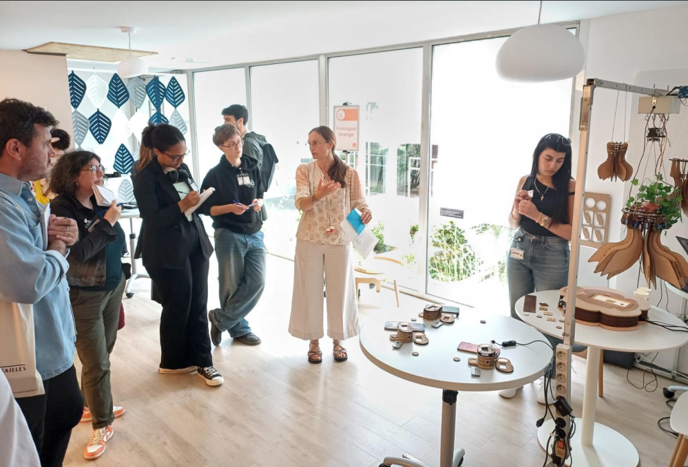
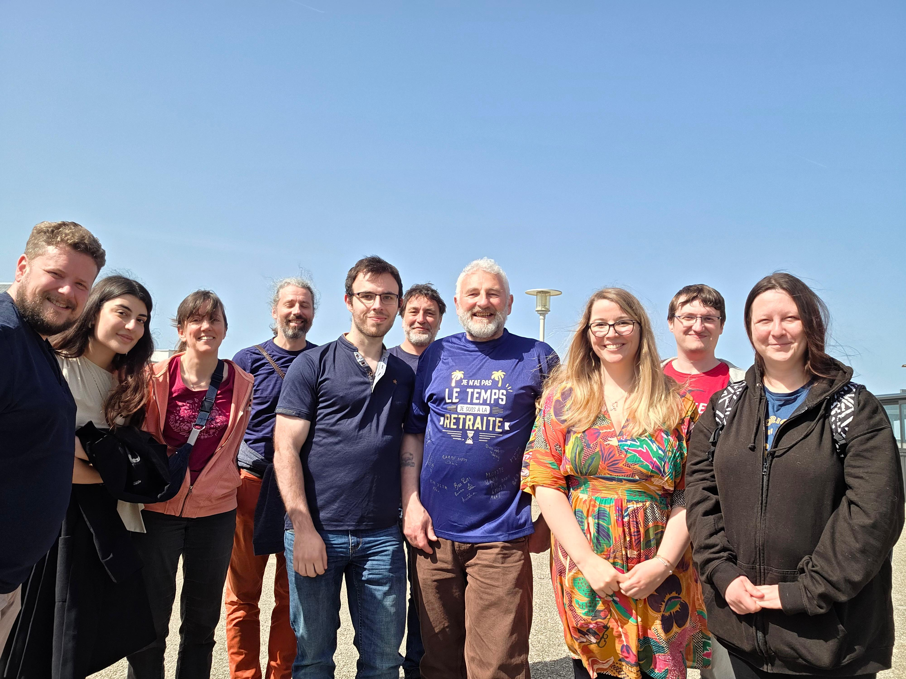

Backend & Software
REST APIs
Flask
FastAPI
JSON
Git/GitHub
Embedded & IoT
Raspberry Pi
Embedded Systems
IoT
Sensors
Monitoring
Data & Tools
Data Processing
Pandas
Grafana
InfluxDB
Dashboards
The system used a Raspberry Pi programmed in Python and connected to a mobile application. The hydroelectric part generated electricity through a water-driven mechanism where river flow rotated a coil-based generator.
Main Features
- Remote monitoring and control of household electricity usage.
- Mobile application for supervision and configuration.
- Consumption threshold management for each house.
- Notifications when a house exceeded the allocated current limit.
- Integration between Raspberry Pi, electrical monitoring, and the mobile interface.
Technologies & Skills
Python
Raspberry Pi
IoT
Mobile Application
Energy Monitoring
Embedded Systems

Project Presentation Days — Lannion
Participation in large-scale technical presentation days in Lannion, presenting projects and exchanging with companies and journalists.

Team Life — Orange Business
Participation in team events celebrating career milestones and reinforcing team cohesion during the work-study experience.